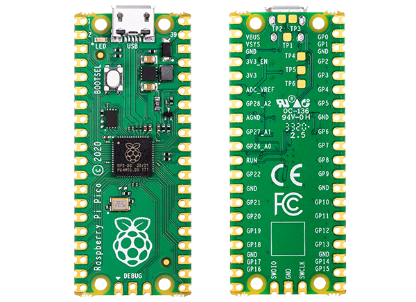

Na área da eletrônica oi DIY (Faça você mesmo) reina! Com micro soldas e placas de circuitos você é capaz de inúmeras inovações. Especialmente a com a Raspberry PI você é capaz de dar "vida" a sua criação, pois ele é capaz de entregar a lógica em um monte de botões e conexões, graças a capacidade dele comportar estruturas de códigos, que é servido como FIRMWARE.
Controles arcade 100% seu!
Contextuado com as capacidades de um componente tão poderoso, você pode começar a capacidade de criar controles de comando para multiplos tipos de jogos, nas citarei diretamente < Fight Games > ou qualquer outro jogo arcade lançados para os fliperamas. Muitas das vezes a complexidades de personagens como Zangief com SPD's que demandam uma volta inteira no analógico ou personagens com ataques charges como o Guile, Blanka, Chun-li e Cammy que não podem ser tão recptivos para player's com controles convecionais.
Perante isso, se há uma necessidade atenda 😉
Com o poderoso Firmware GP2040-CE o possiblita a criar o controle arcade customizado que você sempre sonhou! Um firmware Livre para você fazer oque quer e GRATUITO, isso mesmo, graças a comunidade de desenvolvedores fissurados por Fighting Games o seu projeto nunca foi tão palpável quanto agora!
Com grandes capacidades, existem várias possibilidades! (Leve modificada das palavras do Tio Ben) 😅